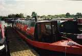
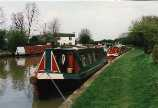
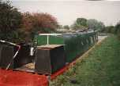
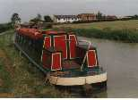
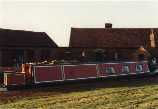
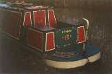
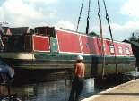
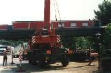
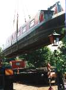
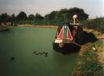

Click on the pictures to see enlarged versions.
Bow when we purchased Dvbris in 1995.
Bow after some simple restoration work. Pictured here at Calcutt top lock on the Grand Union canal.
Stern when we purchased Dvbris in 1995.
Stern after a lot of restoration work. Pictured here north of Braunston on the Oxford Canal (North).
Dvbris after some more paint work, pictured on the South Oxford canal.
Stern after more restoration work, with boards in position to stop little children falling into the canal.
Dvbris in the early stages of being lifted out, before having a new bottom fitted.
Easy does it now!
Nearly there.
A nice photograph of Dvbris on a duck weed covered North Oxford Canal during the summer of 1999.
